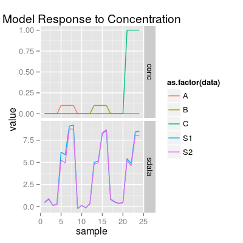
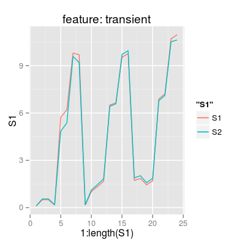
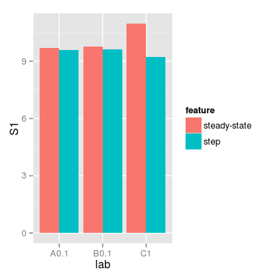

Methods to control the scenario.
Method sdata.frame.
Method nsamples.
Method cmatrix.
Method add<-.
Method checkConc.
Method sdata2feature.
Method sdata2df.
Method conc2df.
Method conc2lab.
Method conc2glab.
Method conc2col.
Method getTPoint.
Method conc2tpoint.
Method lab2df.
Method label2df.
Method set2lab.
Method sdata.frame converts a concetration matrix and (optionally) a sensor data matrix into a data frame.
Method conc2df converts a concetration matrix into a data frame.
Method sdata2feature converts a matrix of sensor data into a data frame of features.
Method sdata2df converts a matrix of sensor data into a data frame.
The input parameters are an object, e.g.
SensorArray, a concentration matrix, and
(optionally) a sensor data matrix. The output data frame
has the following columns:
S1, S2, ... |
Sensor signals. |
A, B, ... |
Gas concentrations (column names equal to gas names of the object). |
glab |
Gas labels, e.g. A
or Air. |
lab |
Gas+Concetratoin
labels, e.g. A 0.01. |
The input parameters are an object, e.g.
SensorArray, and a concentration matrix. The
output data frame has the following columns:
A, B, ... |
Gas concentrations (column names equal to gas names of the object). |
glab |
Gas labels, e.g. A
or Air. |
lab |
Gas+Concetratoin
labels, e.g. A 0.01. |
The input parameters are an object, e.g. of class
SensorArray, a concentration matrix, a matrix of
sensor data, and (optionally) a data frame derived from
conccentraion matrix.
The input parameters are an object, e.g. of class
SensorArray, and a matrix of sensor data.
set.seed(1) ### 1) a concentration matrix of three gases (tunit 4) sa <- SensorArray(tunit = 4) set <- c("A 0.1", "B 0.1", "C 1") sc <- Scenario(set, tunit = 4) conc <- getConc(sc) head(conc)A B C 1 0.0 0 0 2 0.0 0 0 3 0.0 0 0 4 0.0 0 0 5 0.1 0 0 6 0.1 0 0sdata <- predict(sa, conc) p1 <- plotSignal(sa, conc = conc, sdata = sdata) p1
# get a data.frame of features df.transient <- sdata.frame(sa, conc = conc, sdata = sdata, feature = "transient") df.ss <- sdata.frame(sa, conc = conc, sdata = sdata, feature = "steady-state") df.step <- sdata.frame(sa, conc = conc, sdata = sdata, feature = "step") # plot p2 <- ggplot(df.transient, aes(x = 1:length(S1))) + geom_line(aes(y = S1, color = "S1")) + geom_line(aes(y = S2, color = "S2")) + labs(title = "feature: transient") p2
df <- rbind(data.frame(df.ss, feature = "steady-state"), data.frame(df.step, feature = "step")) p3 <- ggplot(df, aes(lab, S1, fill = feature)) + geom_bar(stat = "identity", position = "dodge") p3
### 1) a concentration matrix of three gases (tunit 1) sa <- SensorArray() conc.values <- concMax(sa) conc <- diag(conc.values) conc[,1] [,2] [,3] [1,] 0.1 0.0 0 [2,] 0.0 0.1 0 [3,] 0.0 0.0 1cf <- conc2df(sa, conc) cfA B C glab lab tpoint 1 0.1 0.0 0 A A0.1 gasin 2 0.0 0.1 0 B B0.1 gas 3 0.0 0.0 1 C C1 gasout### 2) a concentration matrix of three gases (tunit = 4) sa <- SensorArray(tunit = 4) set <- c("A 0.1", "B 0.1", "C 1") sc <- Scenario(set, tunit = 4) conc <- getConc(sc) head(conc)A B C 1 0.0 0 0 2 0.0 0 0 3 0.0 0 0 4 0.0 0 0 5 0.1 0 0 6 0.1 0 0cf <- conc2df(sa, conc) head(cf)A B C glab lab tpoint 1 0.0 0 0 Air Air airin 2 0.0 0 0 Air Air air 3 0.0 0 0 Air Air air 4 0.0 0 0 Air Air airout 5 0.1 0 0 A A0.1 gasin 6 0.1 0 0 A A0.1 gas### 1) a concentration matrix of three gases (tunit 4) sa <- SensorArray(tunit = 4) set <- c("A 0.1", "B 0.1", "C 1") sc <- Scenario(set, tunit = 4) conc <- getConc(sc) head(conc)A B C 1 0.0 0 0 2 0.0 0 0 3 0.0 0 0 4 0.0 0 0 5 0.1 0 0 6 0.1 0 0sdata <- predict(sa, conc) df <- sdata2feature(sa, conc, sdata) head(df)S1 S2 A B C glab lab tpoint 1 -0.08189234 -0.08866503 0.0 0 0 Air Air airin 2 0.01093537 0.01183975 0.0 0 0 Air Air air 3 0.06935956 0.07509576 0.0 0 0 Air Air air 4 -0.15973803 -0.17294874 0.0 0 0 Air Air airout 5 6.20643918 5.41737825 0.1 0 0 A A0.1 gasin 6 6.87936410 6.14678371 0.1 0 0 A A0.1 gas### 1) a concentration matrix of three gases (tunit 4) sa <- SensorArray(tunit = 4) set <- c("A 0.1", "B 0.1", "C 1") sc <- Scenario(set, tunit = 4) conc <- getConc(sc) head(conc)A B C 1 0.0 0 0 2 0.0 0 0 3 0.0 0 0 4 0.0 0 0 5 0.1 0 0 6 0.1 0 0sdata <- predict(sa, conc) sf <- sdata2df(sa, sdata) head(sf)S1 S2 1 0.3315624 0.3610083 2 0.3637254 0.3960278 3 0.5523272 0.6013792 4 0.6359962 0.6924789 5 6.5550796 6.3744601 6 6.8815691 6.7257216